Finding the Best Basis Representation
Source:vignettes/basis-representation.Rmd
basis-representation.RmdIntroduction
Basis representation is fundamental in functional data analysis. Instead of working with raw observations at discrete points, we represent curves as linear combinations of basis functions:
where are basis functions and are coefficients.
This approach provides:
- Smoothing: Reduces noise by projecting onto a lower-dimensional space
- Dimensionality reduction: Represents infinite-dimensional functions with finite coefficients
- Regularization: Controls curve smoothness through basis choice and penalties
fdars provides tools to find the optimal basis representation for your data.
Creating Example Data
Let’s create functional data with a known signal plus noise:
# Generate noisy functional data
t <- seq(0, 1, length.out = 100)
n <- 30 # number of curves
# True underlying signal: mixture of sin waves
true_signal <- function(t) sin(2 * pi * t) + 0.5 * sin(4 * pi * t)
# Generate noisy observations
X <- matrix(0, n, length(t))
for (i in 1:n) {
X[i, ] <- true_signal(t) + rnorm(length(t), sd = 0.3)
}
fd <- fdata(X, argvals = t)
# Plot the data
plot(fd, alpha = 0.3)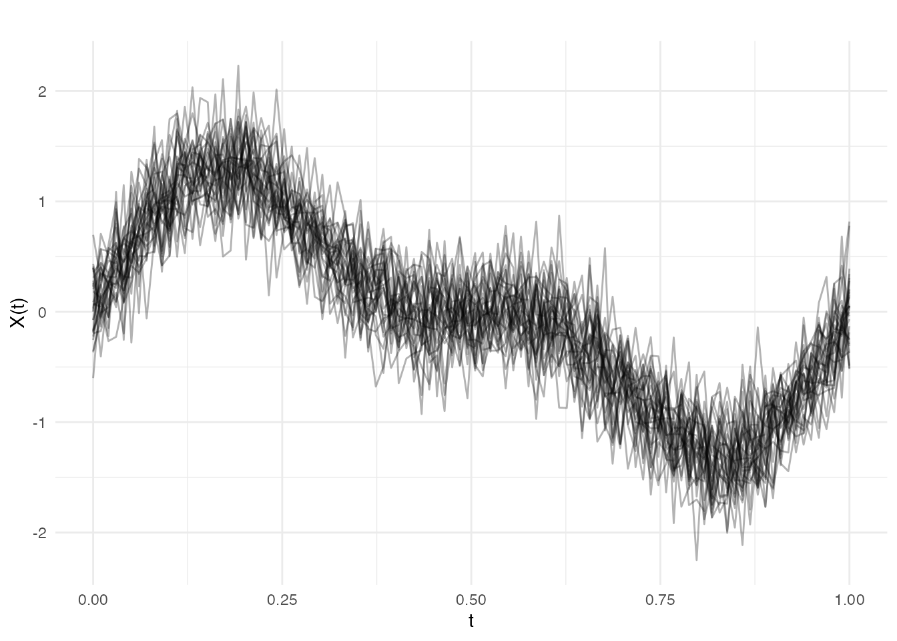
Choosing a Basis Type
fdars supports two main basis types:
B-splines (default)
- Best for non-periodic data
- Local support: each basis function is non-zero only in a limited region
- Good for capturing local features
- Computationally efficient
Fourier Basis
- Best for periodic data (cycles, seasonal patterns)
- Global support: each basis function spans the entire domain
- Natural for data with harmonic structure
# Compare B-spline and Fourier representations
coefs_bspline <- fdata2basis(fd, nbasis = 15, type = "bspline")
coefs_fourier <- fdata2basis(fd, nbasis = 15, type = "fourier")
# Reconstruct
fd_bspline <- basis2fdata(coefs_bspline, argvals = t, type = "bspline")
fd_fourier <- basis2fdata(coefs_fourier, argvals = t, type = "fourier")
# Plot comparison for first curve
df_compare <- data.frame(
t = rep(t, 3),
value = c(fd$data[1, ], fd_bspline$data[1, ], fd_fourier$data[1, ]),
type = factor(rep(c("Original", "B-spline (K=15)", "Fourier (K=15)"), each = length(t)),
levels = c("Original", "B-spline (K=15)", "Fourier (K=15)"))
)
ggplot(df_compare, aes(x = t, y = value, color = type, linewidth = type)) +
geom_line() +
scale_color_manual(values = c("Original" = "gray50", "B-spline (K=15)" = "blue",
"Fourier (K=15)" = "red")) +
scale_linewidth_manual(values = c("Original" = 0.5, "B-spline (K=15)" = 1,
"Fourier (K=15)" = 1)) +
labs(x = "t", y = "X(t)", title = "Basis Representation Comparison") +
theme(legend.position = "bottom", legend.title = element_blank()) +
guides(linewidth = "none")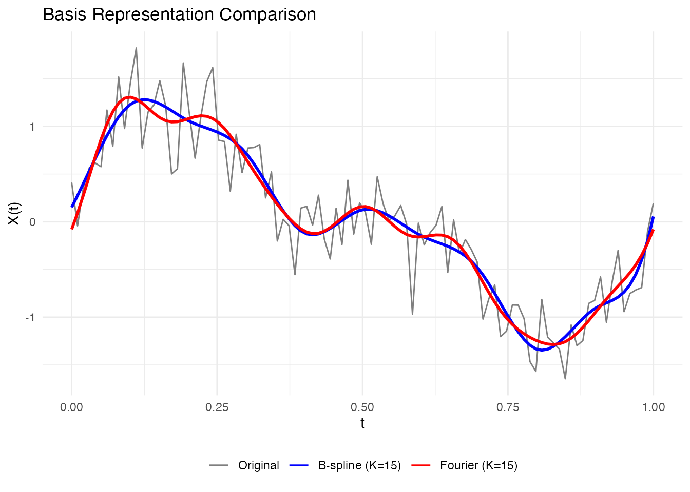
For our sinusoidal data, Fourier basis is more natural since the true signal is composed of sine waves.
Selecting the Number of Basis Functions
The key question: How many basis functions should we use?
- Too few: Underfitting (misses important features)
- Too many: Overfitting (fits noise)
Information Criteria
fdars provides three criteria to evaluate basis representations:
| Criterion | Formula | Penalizes |
|---|---|---|
| GCV | Effective degrees of freedom | |
| AIC | Model complexity (moderate) | |
| BIC | Model complexity (strong) |
# Compute criteria for different nbasis values
nbasis_range <- 5:25
gcv_scores <- sapply(nbasis_range, function(k) basis.gcv(fd, nbasis = k, type = "fourier"))
aic_scores <- sapply(nbasis_range, function(k) basis.aic(fd, nbasis = k, type = "fourier"))
bic_scores <- sapply(nbasis_range, function(k) basis.bic(fd, nbasis = k, type = "fourier"))
# Find optimal values
opt_gcv <- nbasis_range[which.min(gcv_scores)]
opt_aic <- nbasis_range[which.min(aic_scores)]
opt_bic <- nbasis_range[which.min(bic_scores)]
# Create data frame for plotting
df_criteria <- data.frame(
nbasis = rep(nbasis_range, 3),
score = c(gcv_scores, aic_scores, bic_scores),
criterion = rep(c("GCV", "AIC", "BIC"), each = length(nbasis_range)),
optimal = c(nbasis_range == opt_gcv, nbasis_range == opt_aic, nbasis_range == opt_bic)
)
df_optimal <- data.frame(
criterion = c("GCV", "AIC", "BIC"),
nbasis = c(opt_gcv, opt_aic, opt_bic)
)
ggplot(df_criteria, aes(x = nbasis, y = score)) +
geom_line(color = "steelblue") +
geom_point(color = "steelblue") +
geom_vline(data = df_optimal, aes(xintercept = nbasis),
linetype = "dashed", color = "red") +
facet_wrap(~ criterion, scales = "free_y") +
labs(x = "Number of basis functions", y = "Score",
title = "Information Criteria for Basis Selection") +
theme_minimal()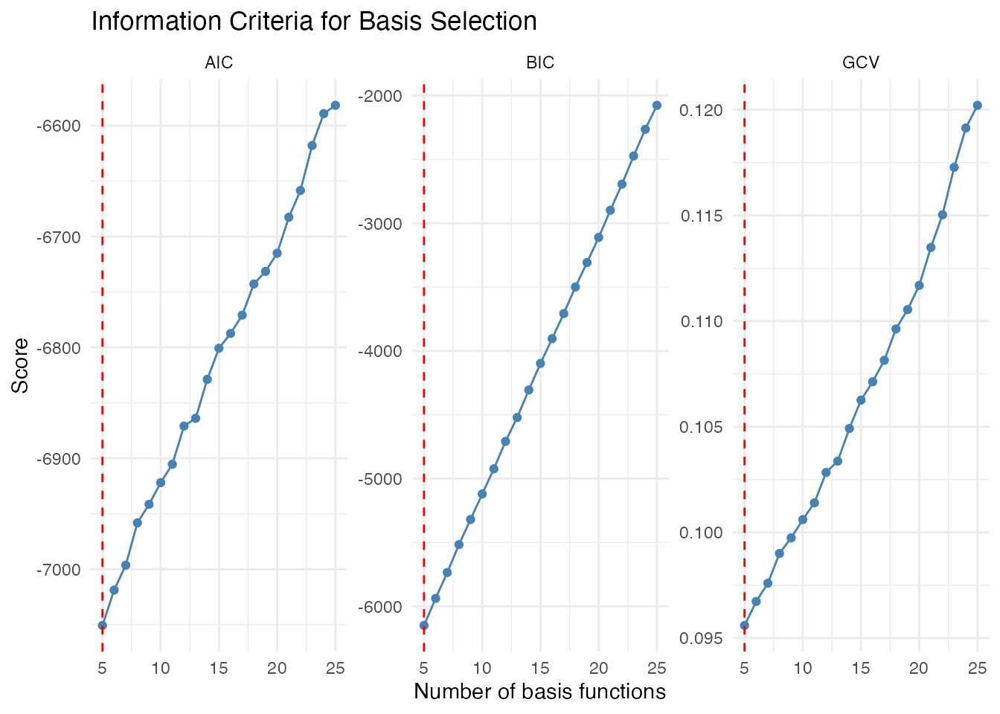
cat("Optimal nbasis - GCV:", opt_gcv, "\n")
#> Optimal nbasis - GCV: 5
cat("Optimal nbasis - AIC:", opt_aic, "\n")
#> Optimal nbasis - AIC: 5
cat("Optimal nbasis - BIC:", opt_bic, "\n")
#> Optimal nbasis - BIC: 5Interpretation:
- GCV (Generalized Cross-Validation): Often a good default, balances fit and complexity
- AIC: Tends to select slightly more complex models
- BIC: More conservative, penalizes complexity more strongly for larger samples
Complex Signal Example: B-spline vs Fourier
The previous example used a sinusoidal signal which is ideally suited for Fourier basis. Let’s now consider a complex non-periodic signal that’s better suited for B-splines:
# Generate data with non-periodic features
set.seed(123)
t2 <- seq(0, 1, length.out = 100)
n2 <- 30
# Complex signal: polynomial trend + localized bump
complex_signal <- function(t) {
trend <- 2 * t^2 - t
bump <- 0.8 * exp(-((t - 0.3)^2) / (2 * 0.05^2))
sharp <- 0.5 * sqrt(pmax(0, t - 0.7))
trend + bump + sharp
}
X2 <- matrix(0, n2, length(t2))
for (i in 1:n2) {
X2[i, ] <- complex_signal(t2) + rnorm(length(t2), sd = 0.15)
}
fd2 <- fdata(X2, argvals = t2)
# Plot the raw complex signal data
plot(fd2) +
labs(title = "Complex Signal: Polynomial Trend + Gaussian Bump + Sharp Edge",
x = "t", y = "Value")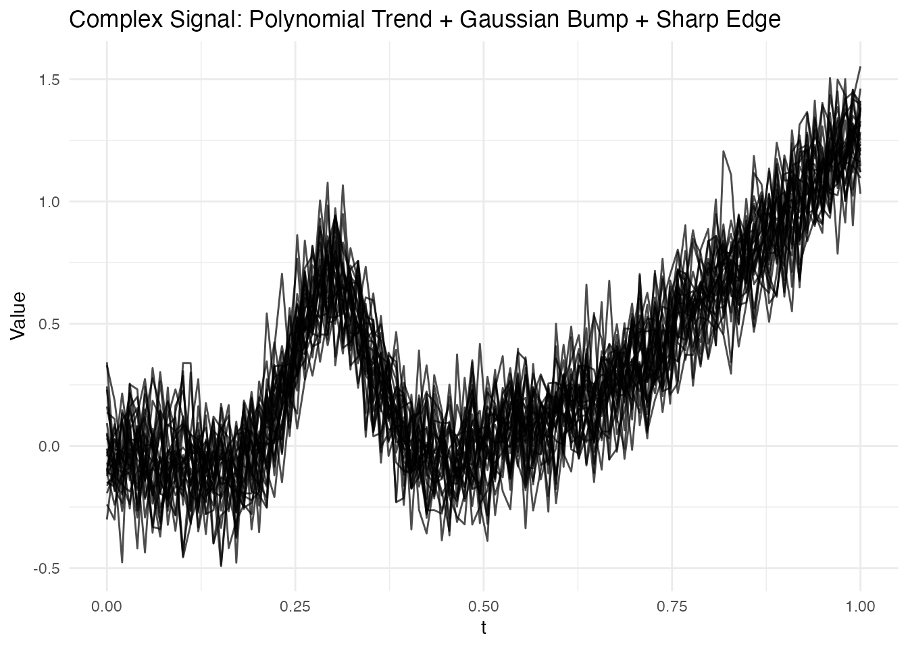
This signal has three distinct features that challenge different basis types:
- Polynomial trend: Smooth, spanning the full domain
- Gaussian bump at : A localized feature
- Sharp edge at : A non-smooth transition
Let’s see which basis type handles this better:
# Compare B-spline vs Fourier for this data
nbasis_range <- 5:25
# B-spline criteria
gcv_bspline <- sapply(nbasis_range, function(k) basis.gcv(fd2, nbasis = k, type = "bspline"))
aic_bspline <- sapply(nbasis_range, function(k) basis.aic(fd2, nbasis = k, type = "bspline"))
# Fourier criteria
gcv_fourier <- sapply(nbasis_range, function(k) basis.gcv(fd2, nbasis = k, type = "fourier"))
aic_fourier <- sapply(nbasis_range, function(k) basis.aic(fd2, nbasis = k, type = "fourier"))
# Find optimal nbasis for each type
opt_bspline <- nbasis_range[which.min(gcv_bspline)]
opt_fourier <- nbasis_range[which.min(gcv_fourier)]
cat("Optimal B-spline nbasis:", opt_bspline, "(GCV:", round(min(gcv_bspline), 4), ")\n")
#> Optimal B-spline nbasis: 15 (GCV: 0.0259 )
cat("Optimal Fourier nbasis:", opt_fourier, "(GCV:", round(min(gcv_fourier), 4), ")\n")
#> Optimal Fourier nbasis: 14 (GCV: 0.048 )
cat("\nB-spline wins with", round((1 - min(gcv_bspline)/min(gcv_fourier)) * 100, 1),
"% lower GCV score\n")
#>
#> B-spline wins with 46.1 % lower GCV score
# Create comparison plot - use SAME scale to show B-spline advantage
df_gcv <- data.frame(
nbasis = rep(nbasis_range, 2),
GCV = c(gcv_bspline, gcv_fourier),
basis = rep(c("B-spline", "Fourier"), each = length(nbasis_range))
)
ggplot(df_gcv, aes(x = nbasis, y = GCV, color = basis)) +
geom_line(linewidth = 1) +
geom_point(size = 2) +
geom_hline(yintercept = min(gcv_bspline), linetype = "dashed",
color = "steelblue", alpha = 0.5) +
geom_hline(yintercept = min(gcv_fourier), linetype = "dashed",
color = "coral", alpha = 0.5) +
annotate("text", x = 24, y = min(gcv_bspline), label = "B-spline optimum",
vjust = -0.5, hjust = 1, size = 3, color = "steelblue") +
annotate("text", x = 24, y = min(gcv_fourier), label = "Fourier optimum",
vjust = 1.5, hjust = 1, size = 3, color = "coral") +
labs(x = "Number of basis functions", y = "GCV Score (lower is better)",
title = "GCV Comparison: B-spline vs Fourier for Non-Periodic Signal",
subtitle = "B-spline clearly outperforms Fourier for this complex signal") +
scale_color_manual(values = c("B-spline" = "steelblue", "Fourier" = "coral")) +
theme(legend.position = "bottom")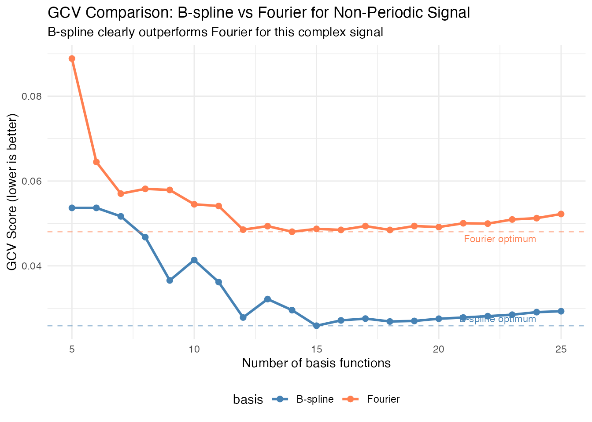
Important: Note that both curves are plotted on the same scale. The B-spline basis achieves a substantially lower GCV score, confirming it’s the better choice for this non-periodic signal with localized features.
Now let’s visualize how each optimal basis representation captures the complex signal:
# Fit both bases at their optimal values
coefs_bspline <- fdata2basis(fd2, nbasis = opt_bspline, type = "bspline")
coefs_fourier <- fdata2basis(fd2, nbasis = opt_fourier, type = "fourier")
fitted_bspline <- basis2fdata(coefs_bspline, argvals = t2, type = "bspline")
fitted_fourier <- basis2fdata(coefs_fourier, argvals = t2, type = "fourier")
# Plot comparison for one curve
i <- 1
df_fit <- data.frame(
t = rep(t2, 4),
value = c(fd2$data[i, ], complex_signal(t2),
fitted_bspline$data[i, ], fitted_fourier$data[i, ]),
type = factor(rep(c("Observed (noisy)", "True signal",
paste0("B-spline (K=", opt_bspline, ")"),
paste0("Fourier (K=", opt_fourier, ")")), each = length(t2)),
levels = c("Observed (noisy)", "True signal",
paste0("B-spline (K=", opt_bspline, ")"),
paste0("Fourier (K=", opt_fourier, ")")))
)
ggplot(df_fit, aes(x = t, y = value, color = type, linetype = type, linewidth = type)) +
geom_line() +
scale_color_manual(values = c("Observed (noisy)" = "gray70",
"True signal" = "black",
setNames("steelblue", paste0("B-spline (K=", opt_bspline, ")")),
setNames("coral", paste0("Fourier (K=", opt_fourier, ")")))) +
scale_linetype_manual(values = c("Observed (noisy)" = "solid",
"True signal" = "dashed",
setNames("solid", paste0("B-spline (K=", opt_bspline, ")")),
setNames("solid", paste0("Fourier (K=", opt_fourier, ")")))) +
scale_linewidth_manual(values = c("Observed (noisy)" = 0.4,
"True signal" = 1,
setNames(1, paste0("B-spline (K=", opt_bspline, ")")),
setNames(1, paste0("Fourier (K=", opt_fourier, ")")))) +
labs(x = "t", y = "Value", color = NULL, linetype = NULL,
title = "Basis Representation Comparison: B-spline vs Fourier",
subtitle = "B-spline captures localized features; Fourier shows ringing artifacts") +
theme(legend.position = "bottom") +
guides(linewidth = "none")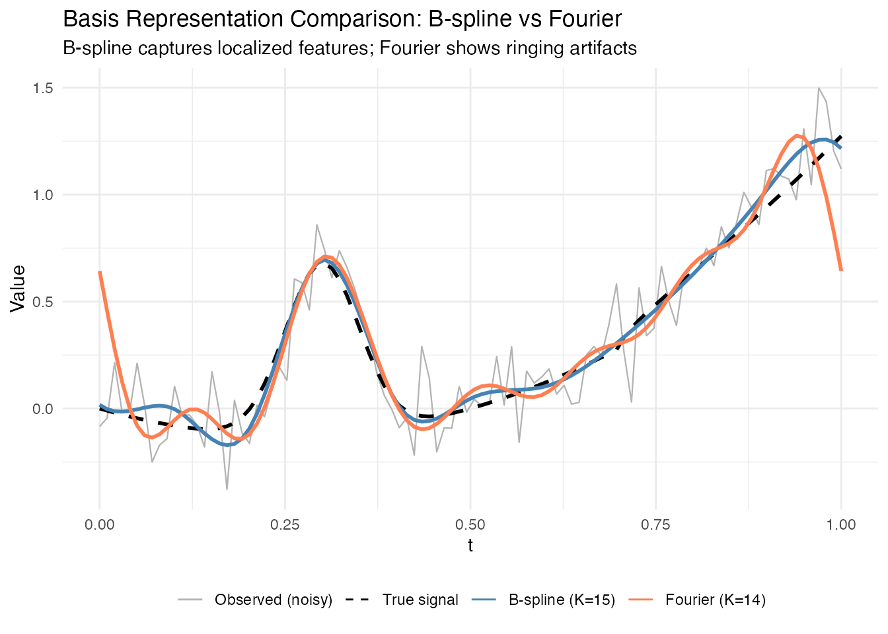
Key observations:
- B-splines are better for localized features (like the Gaussian bump)
- Fourier basis needs more functions to approximate non-periodic signals
- Information criteria help select both basis type AND number of functions
Automatic Selection with fdata2basis_cv()
For convenience, use fdata2basis_cv() to automatically
find the optimal number of basis functions:
# Automatic selection using GCV
cv_result <- fdata2basis_cv(fd, nbasis.range = 5:25, type = "fourier", criterion = "GCV")
print(cv_result)
#> Basis Cross-Validation Results
#> ==============================
#> Criterion: GCV
#> Optimal nbasis: 5
#> Score at optimal: 0.09559293
#> Range tested: 5 - 25
# Visualize the selection
plot(cv_result)
The function returns the optimal number of basis functions and the fitted curves:
# Plot the smoothed data
plot(cv_result$fitted, alpha = 0.5, main = paste("Smoothed with", cv_result$optimal.nbasis, "Fourier basis"))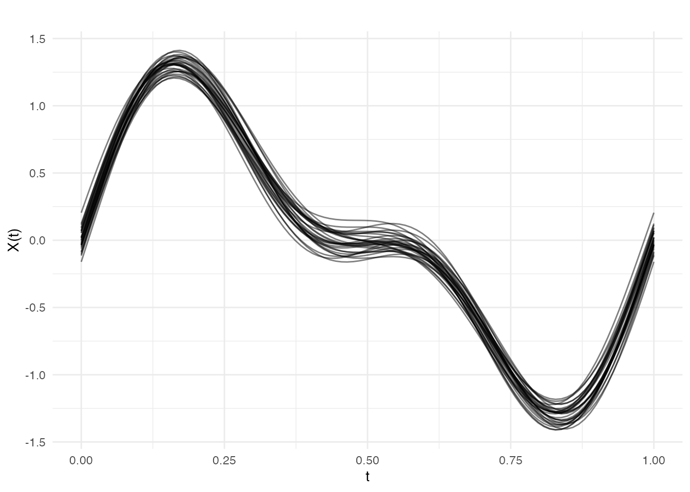
K-fold Cross-Validation
For a more robust estimate, use k-fold cross-validation:
# K-fold cross-validation (slower but more robust)
cv_kfold <- fdata2basis_cv(fd, nbasis.range = 5:25, type = "fourier",
criterion = "CV", kfold = 10)
print(cv_kfold$optimal.nbasis)P-spline Smoothing
P-splines (Penalized B-splines) offer an alternative approach: instead of selecting the number of basis functions, we use many basis functions but add a roughness penalty:
where: - is the B-spline basis matrix - are coefficients - is a difference matrix (controls smoothness) - is the penalty parameter
# Fit P-spline with fixed lambda
result_fixed <- pspline(fd[1], nbasis = 25, lambda = 10)
print(result_fixed)
#> P-spline Smoothing Results
#> ==========================
#> Number of curves: 1
#> Number of basis functions: 25
#> Penalty order: 2
#> Lambda: 1e+01
#> Effective df: 6.68
#> GCV: 1.151e-01
# Compare different lambda values
lambdas <- c(0.01, 1, 100, 10000)
df_lambda <- do.call(rbind, lapply(lambdas, function(lam) {
result <- pspline(fd[1], nbasis = 25, lambda = lam)
data.frame(
t = rep(t, 2),
value = c(fd$data[1, ], result$fdata$data[1, ]),
type = rep(c("Original", "Smoothed"), each = length(t)),
lambda = paste("lambda =", lam)
)
}))
df_lambda$lambda <- factor(df_lambda$lambda, levels = paste("lambda =", lambdas))
ggplot(df_lambda, aes(x = t, y = value, color = type, linewidth = type)) +
geom_line() +
scale_color_manual(values = c("Original" = "gray50", "Smoothed" = "blue")) +
scale_linewidth_manual(values = c("Original" = 0.5, "Smoothed" = 1)) +
facet_wrap(~ lambda, ncol = 2) +
labs(x = "t", y = "X(t)", title = "P-spline Smoothing with Different Lambda") +
theme_minimal() +
theme(legend.position = "bottom", legend.title = element_blank())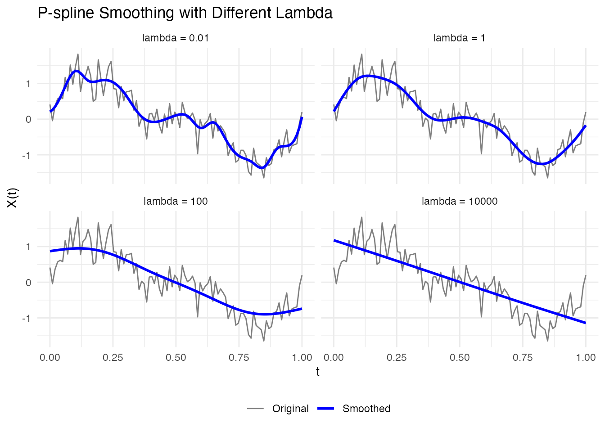
Automatic Lambda Selection
P-splines can automatically select the optimal smoothing parameter:
# Automatic lambda selection using GCV
result_auto <- pspline(fd[1], nbasis = 25, lambda.select = TRUE, criterion = "GCV")
cat("Selected lambda:", result_auto$lambda, "\n")
#> Selected lambda: 1.206793
cat("Effective df:", round(result_auto$edf, 2), "\n")
#> Effective df: 9.99
# Plot result
df_auto <- data.frame(
t = rep(t, 3),
value = c(fd$data[1, ], result_auto$fdata$data[1, ], true_signal(t)),
type = factor(c(rep("Observed", length(t)),
rep("P-spline", length(t)),
rep("True signal", length(t))),
levels = c("Observed", "P-spline", "True signal"))
)
ggplot(df_auto, aes(x = t, y = value, color = type, linetype = type, linewidth = type)) +
geom_line() +
scale_color_manual(values = c("Observed" = "gray50", "P-spline" = "blue",
"True signal" = "red")) +
scale_linetype_manual(values = c("Observed" = "solid", "P-spline" = "solid",
"True signal" = "dashed")) +
scale_linewidth_manual(values = c("Observed" = 0.5, "P-spline" = 1, "True signal" = 1)) +
labs(x = "t", y = "X(t)", title = "P-spline with Auto-selected Lambda") +
theme_minimal() +
theme(legend.position = "bottom", legend.title = element_blank())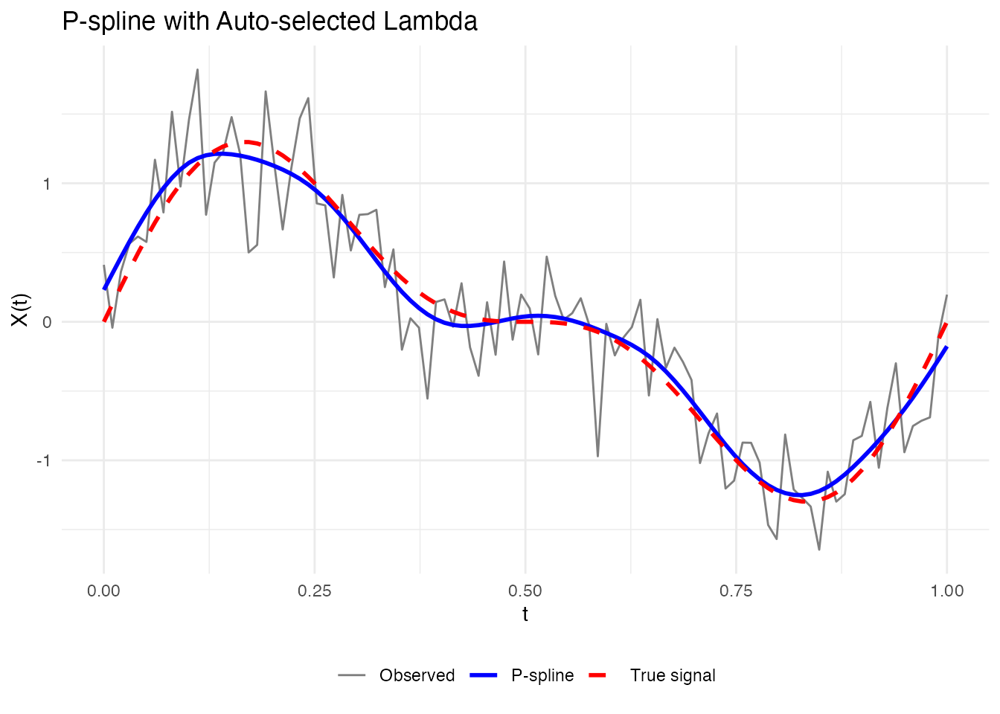
Smoothing Multiple Curves
P-splines work curve-by-curve, so you can smooth entire datasets:
# Smooth all curves with automatic lambda selection
result_all <- pspline(fd, nbasis = 25, lambda.select = TRUE)
# Plot smoothed data
plot(result_all$fdata, alpha = 0.5, main = "All curves smoothed with P-splines")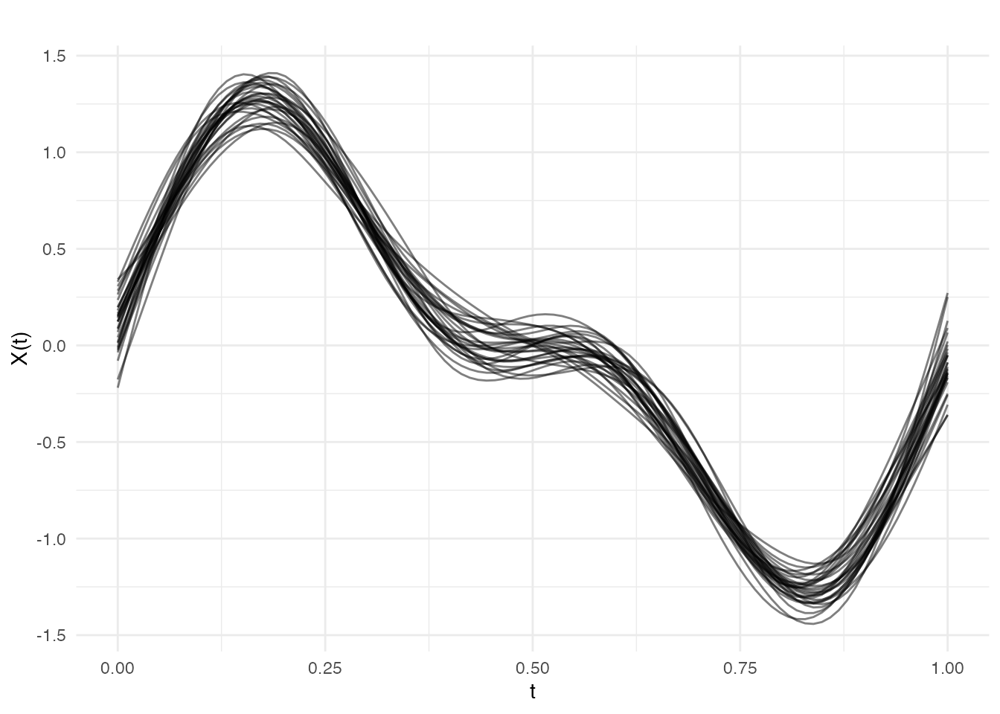
Comparing Approaches
Let’s compare the different smoothing approaches:
# Original noisy data
fd_single <- fd[1]
# 1. Simple basis projection (Fourier)
coefs <- fdata2basis(fd_single, nbasis = 9, type = "fourier")
fd_fourier <- basis2fdata(coefs, argvals = t, type = "fourier")
# 2. Optimal basis via CV
cv_opt <- fdata2basis_cv(fd_single, nbasis.range = 5:20, type = "fourier")
fd_cv <- cv_opt$fitted
# 3. P-spline with automatic lambda
ps_result <- pspline(fd_single, nbasis = 25, lambda.select = TRUE)
fd_pspline <- ps_result$fdata
# Plot comparison
df_comp <- data.frame(
t = rep(t, 5),
value = c(fd_single$data[1, ], fd_fourier$data[1, ], fd_cv$data[1, ],
fd_pspline$data[1, ], true_signal(t)),
method = factor(c(rep("Observed", length(t)),
rep("Fourier (K=9)", length(t)),
rep(paste0("CV-optimal (K=", cv_opt$optimal.nbasis, ")"), length(t)),
rep("P-spline", length(t)),
rep("True signal", length(t))),
levels = c("Observed", "Fourier (K=9)",
paste0("CV-optimal (K=", cv_opt$optimal.nbasis, ")"),
"P-spline", "True signal"))
)
ggplot(df_comp, aes(x = t, y = value, color = method, linetype = method, linewidth = method)) +
geom_line() +
scale_color_manual(values = c("Observed" = "gray50", "Fourier (K=9)" = "blue",
"CV-optimal (K=9)" = "green", "P-spline" = "purple",
"True signal" = "red",
setNames("green", paste0("CV-optimal (K=", cv_opt$optimal.nbasis, ")")))) +
scale_linetype_manual(values = c("Observed" = "solid", "Fourier (K=9)" = "solid",
"CV-optimal (K=9)" = "solid", "P-spline" = "solid",
"True signal" = "dashed",
setNames("solid", paste0("CV-optimal (K=", cv_opt$optimal.nbasis, ")")))) +
scale_linewidth_manual(values = c("Observed" = 0.5, "Fourier (K=9)" = 1,
"CV-optimal (K=9)" = 1, "P-spline" = 1,
"True signal" = 1,
setNames(1, paste0("CV-optimal (K=", cv_opt$optimal.nbasis, ")")))) +
labs(x = "t", y = "X(t)", title = "Comparison of Smoothing Methods", color = NULL) +
theme_minimal() +
theme(legend.position = "bottom") +
guides(linetype = "none", linewidth = "none")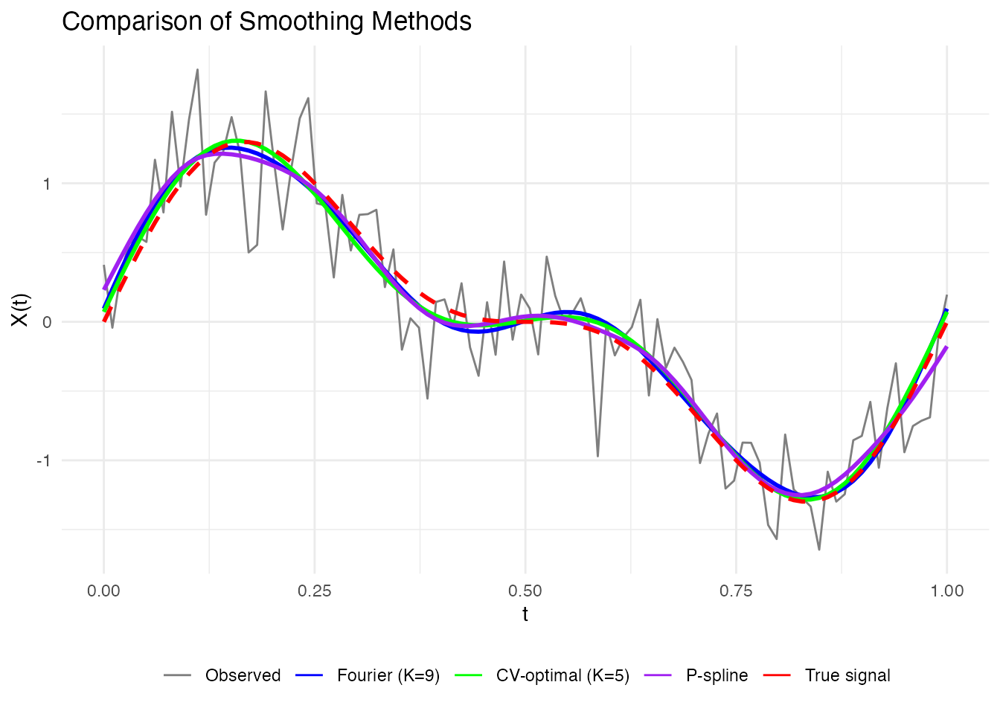
Recommendations
| Situation | Recommended Approach |
|---|---|
| Periodic data | Fourier basis with GCV selection |
| Non-periodic data | B-spline basis with GCV selection |
| Heavy noise | P-splines with automatic lambda |
| Fast processing needed | Simple basis with fixed K |
| Publication-quality | K-fold CV for robust selection |
Summary
-
Choose basis type based on data characteristics:
- Fourier for periodic patterns
- B-splines for non-periodic data
-
Select complexity using information criteria:
-
fdata2basis_cv()for automatic nbasis selection -
basis.gcv(),basis.aic(),basis.bic()for manual comparison
-
-
Consider P-splines for:
- Heavy noise scenarios
- When you want smooth derivatives
- Automatic smoothing parameter selection
- Validate by comparing reconstructed curves to the original data